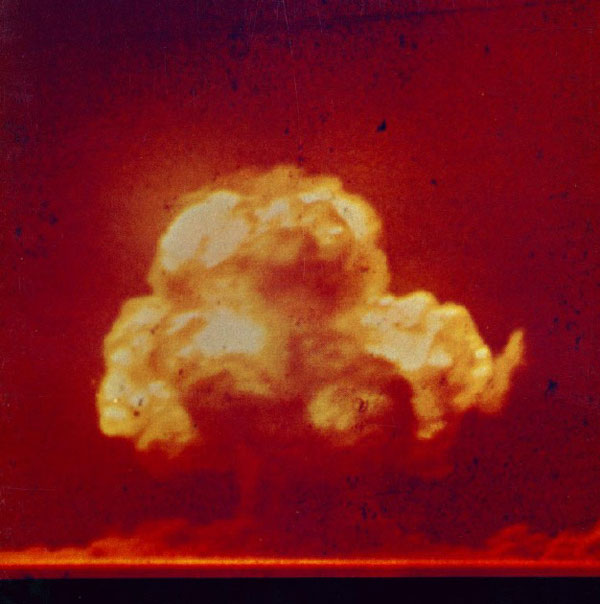
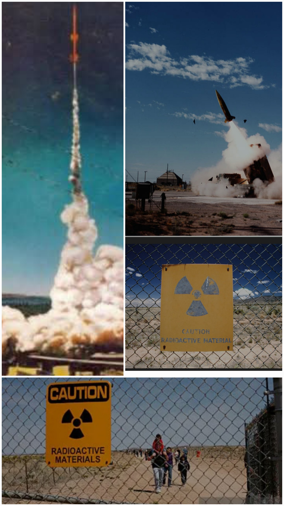
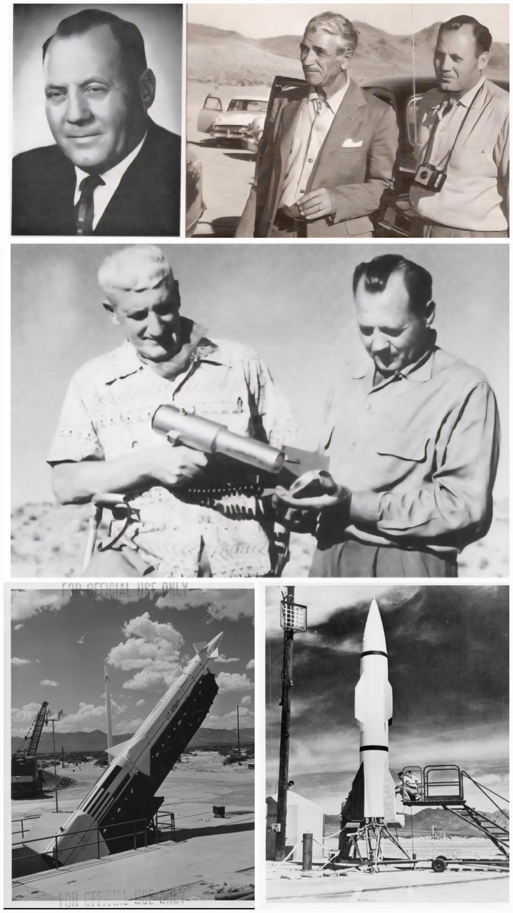
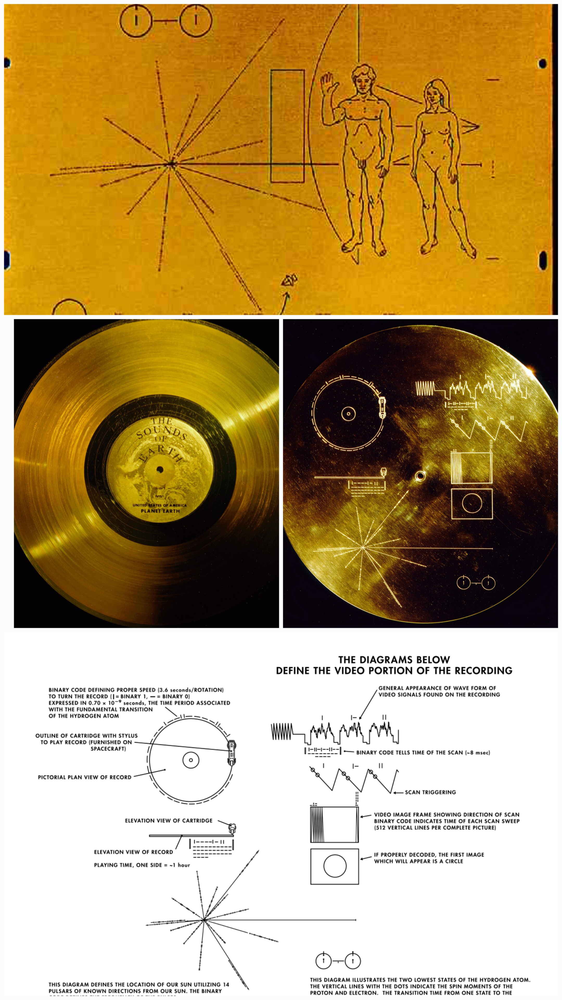
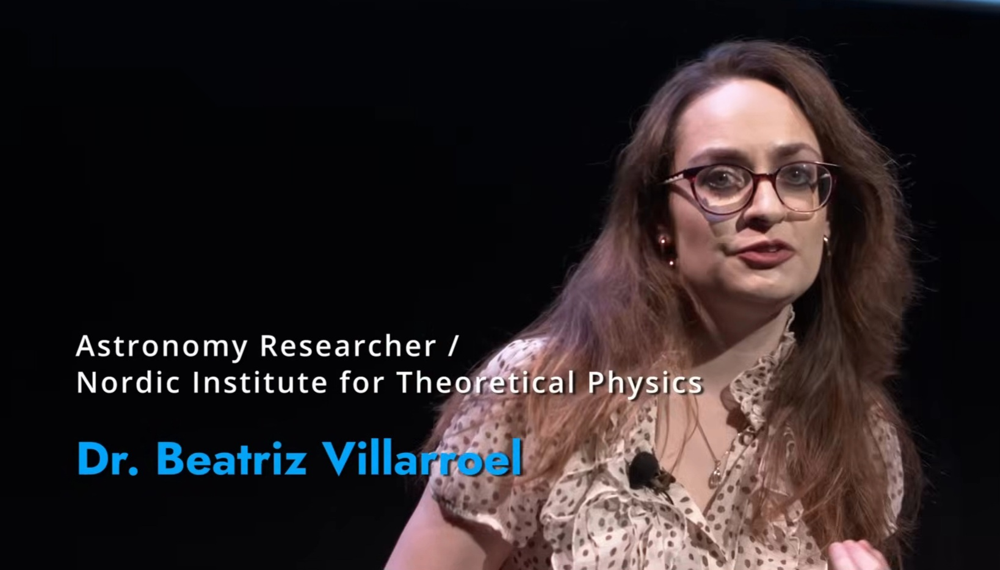
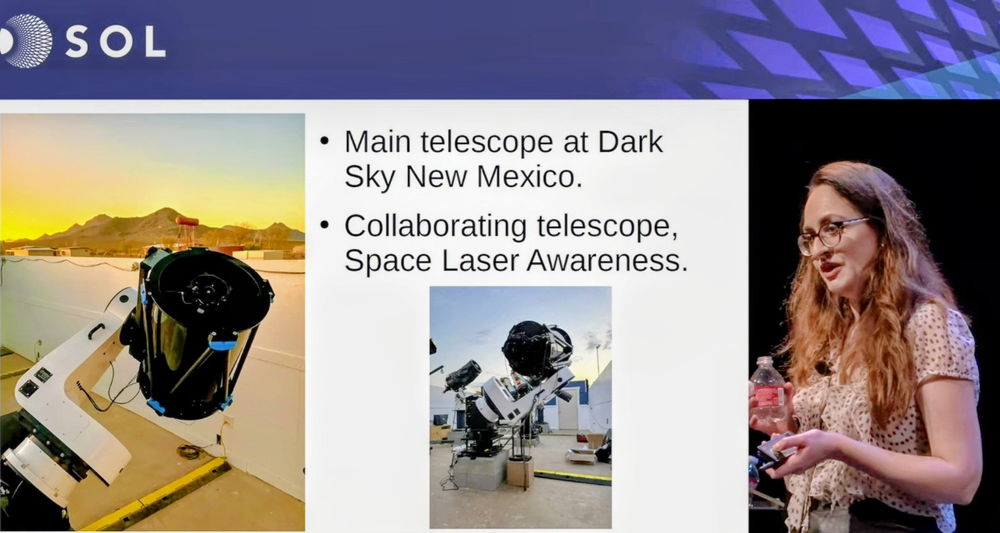

Kärnvapenepoken: data, berättelser och historisk markör
Hur samma teknologiska genombrott gav upphov till moraliska berättelser,
Den här sidan rör sig mellan historia, berättelser och modern forskning. Delarna är avsiktligt åtskilda.
Inledning
Denna text behandlar kärnvapenepoken som ett historiskt skede där flera olika sätt att tala om anomala erfarenheter och fenomen uppstår samtidigt, men på tydligt åtskilda nivåer. I personliga närkontaktsberättelser och samtida vittnesmål från 1900-talets mitt framträder kärnvapen ofta som moraliska symboler – uttryck för mänsklig oro, ansvar och existentiell osäkerhet inför nyvunnen destruktiv kapacitet. I observationsbaserad forskning förekommer samma teknologi i ett helt annat register: som en tidsmässig referenspunkt i empiriska data, där vissa anomalier sammanfaller med perioder av intensiv kärnteknologisk aktivitet utan att detta i sig utgör en förklaring.
Textens kärna är att dessa uttryck inte får blandas samman, men heller inte ignoreras, eftersom de uppträder i samma historiska epok. Kärnvapenteknologin framträder därmed som en historisk markör där mänskliga tolkningar och observationsdata samexisterar, utan att ännu låta sig reduceras till en gemensam mening. ov ster och kosmisk reflektion – utan att dessa språk får blandas samman. Nedan visas en bild på det första kärnvapentestet i White Sands, USA den 16 juli 1945. Denna händelse används i forskning som en tydlig historisk markör för början av kärnteknologisk aktivitet, och förekommer i analyser där tidsmässiga samband mellan teknologiska epoker och observationsdata undersöks.

”Sidan gör inga påståenden om tolkning – endast om sammanhang.”
När samma epok bär olika språk
Det är slående hur ofta kärnvapen återkommer i mänskliga redogörelser av anomala erfarenheter. Inte som tekniska detaljer, utan som laddade symboler. I många närkontaktsberättelser formuleras kärnvapen som varningar: bilder av mänsklighetens tekniska omognad, etiska brister och risken för självförstörelse. Här fungerar kärnvapen som ett moraliskt språk – ett sätt för människor att gestalta chocken över att plötsligt besitta kapaciteten till total förstörelse.
Samtidigt förekommer samma teknologi i ett helt annat sammanhang inom observationsbaserad forskning. Där finns inga budskap, inga intentioner och inga varningar – endast data. Historiska analyser av observationsarkiv visar att vissa anomalier sammanfaller tidsmässigt med perioder av intensiv kärnteknologisk aktivitet under 1900-talet. Detta är en empirisk korrelation: inget mer, men heller inget mindre.
Det avgörande är att dessa två uttryck inte säger samma sak. Det ena rör mening och mänsklig tolkning, det andra rör mönster i data. Ändå pekar båda mot samma historiska epok: den tid då människan började påverka sin omgivning på planetär och potentiellt självförstörande nivå.
Här uppstår lätt förvirring. Det är frestande att läsa moral in i data, eller att avfärda mänskliga berättelser som irrelevanta. Textens grundhållning är att intellektuell hederlighet kräver något annat: att hålla nivåerna isär, utan att förneka att de samexisterar i samma tidsrum.

Mot denna bakgrund träder en närkontaktsberättelse fram.
Närkontaktsberättelsernas språk
I många närkontaktsberättelser beskrivs hur individer upplever att de får se bilder eller sekvenser av framtida förstörelse – ofta kopplade till kärnvapen, radioaktiv ödeläggelse eller en obeboelig jord. Dessa syner fungerar inte som observationer i vetenskaplig mening, utan som ett återkommande narrativt mönster där kärnteknologin blir bärare av mänsklig oro, skuld och ansvar.
Dessa berättelser säger mindre om yttre realiteter och mer om hur människor försökt förstå sin plats i en värld där den egna tekniken plötsligt hotar det gemensamma framtidsrummet.
Daniel W Frys berättelser placeras tydligt i detta sammanhang. De saknar verifierbara observationer, mätdata och oberoende bekräftelse. Deras betydelse ligger inte i evidens, utan i hur människor under kärnvapenepokens tidiga år bearbetade sin sårbarhet och sitt ansvar genom berättelser.

Carl Sagan: kosmisk reflektion och ansvar
Carl Sagan representerar ett tredje sätt att tala som växer fram under kärnvapenepoken: ett reflekterande, kosmiskt perspektiv som står bredvid både närkontaktsberättelsernas moraliska symbolik och den observationsbaserade forskningens dataregister.
Amerikansk astronom och vetenskapskommunikatör.
Som astronom och planetforskare rörde han sig naturligt mellan hård empiri (planetmiljöer, risker och sannolikheter) och de större frågor som följer av teknikens språng: hur en civilisation hanterar makt, sårbarhet och tidsskala. Sagan var samtidigt en tidig röst för ett modernt SETI- och technosignatur-synsätt. Han visade att det går att resonera nyktert om teknologiska spår, artefakter och meddelanden utan att blanda ihop hypotes, symbolik och bevis. För honom var detta ingen motsättning, utan en fråga om disciplin: att hålla isär vad som kan mätas, vad som kan antas och vad som kan reflekteras. [Läs mer om pågående SETI-forskning.]
I detta sammanhang fungerar Sagan som en historisk markör för ett medvetet separat språk. Vetenskapliga data behandlas strikt som data, medan följderna av teknologisk kapacitet – kärnvapenhot, ekologisk risk och civilisationens mognad – förs i ett eget filosofiskt och etiskt register. Han söker inte svar i berättelser, och han låter mätningar förbli mätningar.
Sagan blir därmed en brofigur mellan vetenskaplig stringens och civilisatorisk självkännedom: ett sätt att hålla tanken stor utan att göra metoden mjuk. Han vägrar också låtsas att fakta kan existera utan konsekvenser för hur en civilisation förstår och förvaltar sin egen makt.
Citaten som följer nedan är inte som utsmyckning, utan som orienteringspunkter. De komprimerar Sagans grundhållning: teknologisk kapacitet måste förstås tillsammans med ansvar, och mognad prövas när samhällen kan hota sina egna livsvillkor. Citaten markerar tre teman – självrisk, eskalationslogik och kosmisk perspektivförskjutning – och håller reflektion tydligt åtskild från både berättelsematerial och observationsdata.
Självrisk
For the first time in the history of the planet, a species has the technology
to destroy itself. This is a test of our maturity.
— Carl Sagan
Eskalationslogik
The nuclear arms race is like two sworn enemies standing waist deep in gasoline,
one with three matches, the other with five.
— Carl Sagan
Kosmisk perspektivförskjutning
We are the representatives of the cosmos; we are an example of what hydrogen
atoms can do, given billions of years of cosmic evolution.
— Carl Sagan

För en samtida översikt av Voyager-sonderna och deras betydelse, se Yle.
Stafettpinnen: från reflektion till metod
Med Voyager-sonderna blir Sagans reflekterande perspektiv plötsligt konkret: teknik som inte bara diskuteras, utan faktiskt lämnar jorden, bär information vidare i tid och rum och existerar oberoende av mänsklig närvaro.
Här förskjuts fokus – från vad tekniken säger om oss, till hur teknologiska spår över huvud taget kan identifieras, särskiljas och undersökas i data.
Det är i detta skifte som dagens observationsbaserade forskning tar vid. I stället för symbolik eller berättelser riktas blicken mot kortlivade ljusfenomen, arkivmaterial och mönster som ännu saknar tydlig förklaring.
Frågan är inte längre hur en civilisation förstår sig själv, utan hur spår av avancerad teknologi kan observeras, verifieras och följas upp utan att metod och disciplin löses upp.
Nästa del går därför vidare in i ett konsekvent observationsbaserat arbete – ett fält som rymmer både historiska arkiv och ny data inom samma metodiska ram, med transparens och reproducerbarhet som bärande principer.
Här tar Beatriz Villarroels arbete vid, där frågan om teknologiska spår från icke-jordisk intelligens närmar sig vetenskaplig prövning genom analys av historiska observationer och oförklarliga ljusfenomen som ännu saknar etablerad förklaring.
Frågan är inte om något finns, utan hur spår som inte låter sig förklaras inom kända ramar ska undersökas utan att metoden kompromissas.

Astronom och forskare verksam inom observationsbaserad forskning om kortlivade ljusfenomen och potentiella teknosignaturer. Hennes arbete fokuserar på systematiska analyser av historiska observationsarkiv och nutida data, med särskild betoning på metodik, reproducerbarhet och tydlig åtskillnad mellan observation, analys och tolkning.
Här landar sidan i ett strikt observationsbaserat arbetssätt. Inga berättelser, inga budskap och inga antaganden om intention – endast dokumenterade observationer, arkivmaterial och systematiska jämförelser över tid.
Kärnan i detta arbete är att identifiera mönster som kan reproduceras och kontrolleras av oberoende forskare. Kärnteknologi förekommer här inte som symbol eller förklaring, utan uteslutande som en möjlig tidsmässig markör i historiska analyser.

Ett pågående observationsarbete i närjordens omgivning, byggt för att kunna kontrolleras och följas upp med oberoende verifiering.
I intervjuer och populärvetenskapliga sammanhang har Villarroel även resonerat kring möjligheten att avancerad teknologi kan lämna spår i form av obemannade artefakter eller sonder. Detta förekommer som ett teoretiskt resonemang, tydligt åtskilt från det faktiska observationsarbetet.
Dessa resonemang utgör inte en tolkning av insamlad data, utan en reflektion kring vilka typer av teknosignaturer som i princip skulle kunna vara observerbara.
Det särskiljande i Villarroels arbete är inte enskilda hypoteser, utan valet att systematiskt återvända till observationsmaterial som länge betraktats som avslutat eller ointressant. Genom att kombinera historiska arkiv med moderna analysmetoder öppnas möjligheten att ställa nya frågor till gammal data – utan att på förhand begränsa vilka svar som är acceptabla.
I detta avseende representerar Villarroel ett ovanligt vetenskapligt ledarskap i samtiden. Hon väljer att arbeta öppet med frågor som länge betraktats som karriärmässigt känsliga, och gör det genom att konsekvent hålla sig till etablerad metod, transparens och reproducerbarhet. Det är ett förhållningssätt som förflyttar gränsen för vad som anses legitimt att undersöka – inte genom påståenden, utan genom arbete.
Detta arbete söker inte snabba slutsatser, utan långsiktig begriplighet. Genom att hålla fast vid metod, öppenhet och arkivens uthållighet etablerar Villarroel ett arbetssätt där även osäkra och stigmatiserade frågor kan bäras vidare utan att vetenskaplig integritet går förlorad. Det är så nya forskningsfält faktiskt uppstår: inte genom svar, utan genom strukturer som tål framtida prövning.
Villarroel medverkade vid Europaparlamentets UAP-möte den 20 mars 2024, där observationsdata om UAP behandlades i relation till flygsäkerhet, rapportering och institutionell beredskap på europeisk nivå.
Europaparlamentet (20 mars 2024): Scientific Perspective on UAP – Dr. Beatriz Villarroel
Relaterade initiativ (kort överblick)
-
Galileo-projektet.
Internationellt nätverk för systematiska observationer och analys av anomalier och tekniska signaler.
Populär Astronomi -
VASCO.
Arkivbaserat forskningsprojekt som analyserar historiska observationsdata för kortlivade fenomen.
Stockholms universitet -
ExoProbe.
Nätverk av sammankopplade teleskop för dokumentation av kortlivade ljusfenomen nära jorden.
(Länk läggs till) -
ECRI.
Europeiskt initiativ för att kartlägga och analysera rapporterade UFO/UAP-relaterade kraschplatser.
European Crash Retrieval Initiative -
The Sol Foundation.
Plattform för vetenskapliga, policy- och kunskapsfrågor kopplade till UAP och långsiktigt forskningsarbete.
thesolfoundation.org